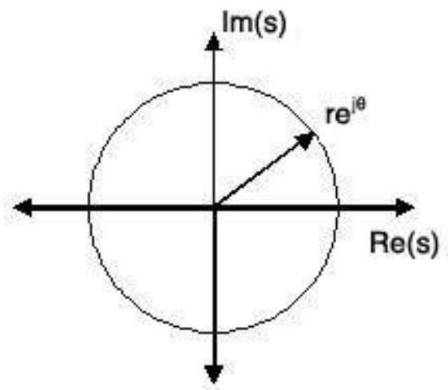
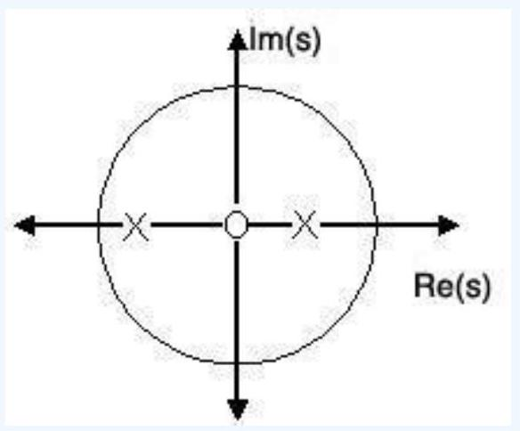

Unit-2: Transfer Functions
The transfer function of a system is defined as the ratio of Laplace transform of output to the Laplace transform of input where all the initial conditions are zero.
Where,
- $T(S)$ = Transfer function of the system.
- $C(S)$ = output.
- $R(S)$ = Reference output.
- $G(S)$ = Gain.
Steps to obtain transfer function -
Step-1 Write the differential equation.
Step-2 Find out Laplace transform of the equation assuming 'zero' as an initial condition.
Step-3 Take the ratio of output to input.
Step-4 Write down the equation of $G(S)$ as follows -
Here, $a$ and $b$ are constant, and $S$ is a complex variable
Characteristic equation of a transfer function -
Here, the characteristic equation of a linear system can be obtained by equating the denominator to the polynomial of a transfer function is zero. Thus the characteristic equation of the transfer function of Eq.1 will be:
Advantages of Transfer function
- If transfer function of a system is known, the response of the system to any input can be determined very easily.
- A transfer function is a mathematical model and it gives the gain of the system.
- Since it involves the Laplace transform, the terms are simple algebraic expressions and no differential terms are present.
- Poles and zeroes of a system can be determined from the knowledge of the transfer function of the system.
Disadvantages of Transfer function
- Transfer function does not take into account the initial conditions.
- The transfer function can be defined for linear systems only.
- No inferences can be drawn about the physical structure of the system
Poles and Zeros of a transfer function -
Consider the equation 1, the numerator and denominator can be factored in m and n terms respectively:
Where,
is known as the gain factor and 's' is the complex frequency.
Poles
Poles are the frequencies of the transfer function for which the value of the transfer function becomes zero.
Zeros
Zeros are the frequencies of the transfer function for which the value of the transfer function becomes zero.
We will apply Sridhar Acharya method to find the roots of poles and zeros -
If any poles or zeros coincide then such poles and zeros are called multiple poles or multiple zeros.
If the poles and zeros do not coincide then such poles and zeros are called simple poles or simple zeros.
For example-
Find the transfer function of the following function
The zeros of the function are $S = -3$ and the poles of the function are $S = 0, S = -2$, and multiple poles at $S = -4$ i.e. the pole of order 2 at $S = -4$.
The S-Plane
Once the poles and zeros have been found for a given Laplace Transform, they can be plotted onto the S-Plane. The S-plane is a complex plane with an imaginary and real axis referring to the complex-valued variable z. The position on the complex plane is given by $re^{j\theta}$ and the angle from the positive, real axis around the plane is denoted by $\theta$. When mapping poles and zeros onto the plane, poles are denoted by an "x" and zeros by an "o". The below figure shows the S Plane, and examples of plotting zeros and poles onto the plane can be found in the following section.
Examples of Pole/Zero Plots
This section lists several examples of finding the poles and zeros of a transfer function and then plotting them onto the S-Plane.
Example: Simple Pole/Zero Plot
The zeros are: {0}
The poles are: {1/2, -3/4}
Using the zeros and poles found from the transfer function, the one zero is mapped to zero and the two poles are placed at 1/2 and −3/4